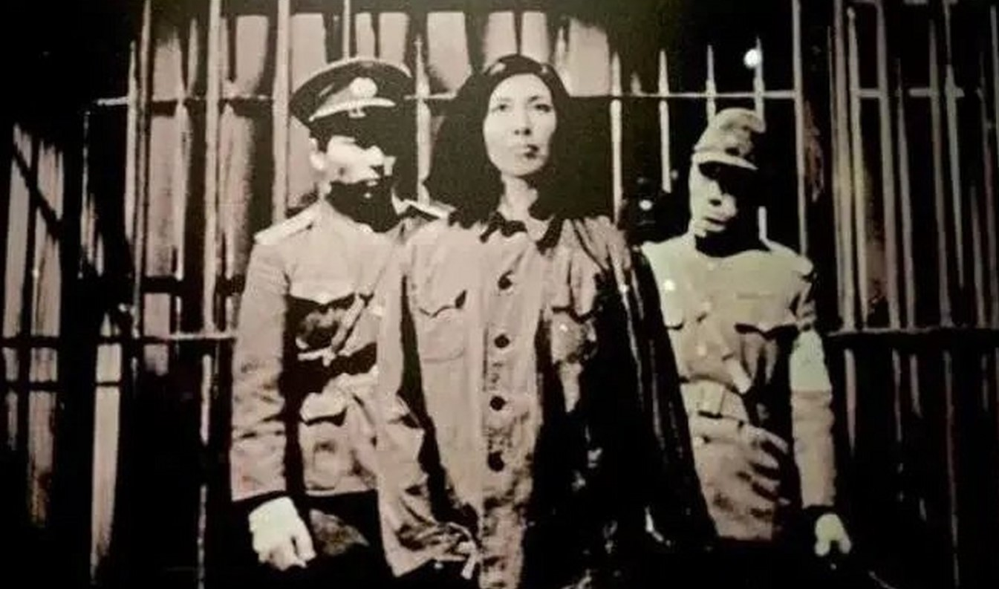

信仰如磐：赵一曼的隐秘抗争与不朽抉择

抗日战争时期，中国共产党领导的地下党员在日占区和国统区开展了艰苦卓绝的秘密斗争。他们潜伏在敌人心脏，搜集情报、组织群众、策反敌伪，为抗战胜利作出了不可磨灭的贡献。 赵一曼，原名李坤泰，四川宜宾人。1926年加入中国共产党，1927年被派往苏联莫斯科中山大学学习。回国后，这位受过高等教育的女性主动请缨前往最艰苦的东北抗日战场。 1932-1934年在哈尔滨的地下工作，化名"赵一曼"，以烟草公司职员身份潜伏领导哈尔滨电车工人大罢工，组织老巴夺烟厂工人抗日活动，建立十几支工人赤卫队。同时进行情报传递工作，发展铁路工人建立秘密交通线，获取日军"讨伐"计划等重要情报。 1934年后转战珠河游击区，任珠河中心县委委员，创建农民自卫队，后发展为游击连。1935年秋指挥袭击日军军用列车。她注重群众工作，在候林乡、乌吉密等地建立抗日救国会，创办《妇女同胞》等秘密刊物。 1935年11月左撇子沟战斗中，为掩护部队突围身负重伤弹尽粮绝后被俘狱中受尽酷刑，拒不屈服，在医院策反看守和护士协助脱险未遂，写下了感人至深的《示儿书》。1936年8月2日，在珠河县小北门慷慨就义，年仅31岁，临终高呼："打倒日本帝国主义！""中国共产党万岁！"日军档案记载："共党女犯赵一曼，至死态度强硬" 赵一曼用短暂而光辉的一生诠释了什么是共产党员的信仰与忠诚。这位"白山黑水"民族魂，至今仍在激励着后人。